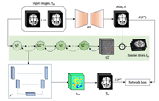
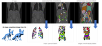
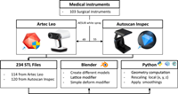

The page lists publications that use MedShapeNet, including:

SADIR: Shape-Aware Diffusion Models for 3D Image Reconstruction . In ShapeMI 2023, MICCAI Workshop.

Anatomy Completor: A Multi-class Completion Framework for 3D Anatomy Reconstruction . In ShapeMI 2023, MICCAI Workshop.


3D surgical instrument collection for computer vision and extended reality . In Scientific Data, 2023.